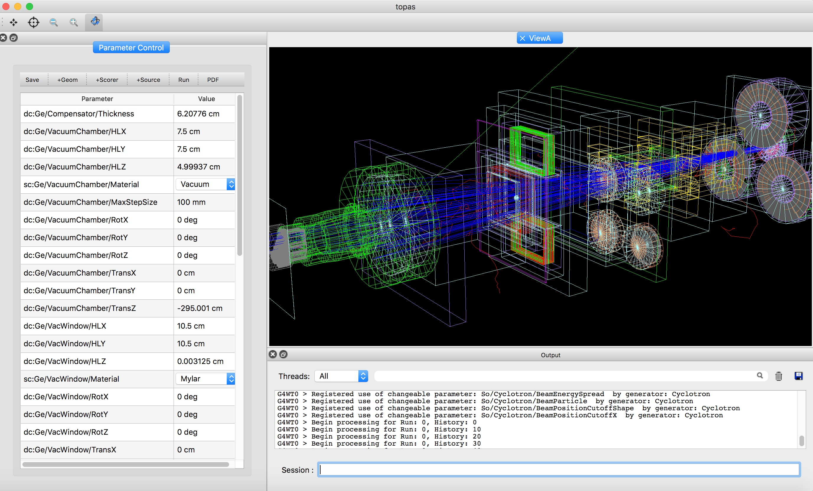

The TOPAS-nBio Graphical User Interface¶
TOPAS-nBio includes an optional Graphical User Interface (GUI). The GUI allows the user to easily manipulate graphics (rotate, zoom and click on graphical elements to get more information about the selected geometry element or particle track) and inspect and adjust TOPAS parameters.
The GUI is intended as a rapid prototyping extension of TOPAS-nBio. It allows you to easily see and adjust geometry and review the behavior of a small set of particle histories. The GUI then gives you the ability to save the new parameters, such that these saved values can later be loaded back in to a new TOPAS-nBio session, with or without the GUI.
For larger, high precision runs, with larger numbers of histories, the user will generally run on a batch system (cluster or cloud) without the GUI.
Future developments will extend the system such that users will be able to directly launch cluster or cloud jobs from the GUI, with the GUI serving to monitor the progress of those jobs and display their results.
The GUI is based on the Qt Toolkit. To activate the GUI, include the following parameter in your TOPAS Parameter Control File:
Ts/UseQt = "True"
TOPAS will then bring up the GUI.
Mouse Control¶
The top row of icons determine the behavior of the mouse when one clicks in the graphics window. Going from left to right:
Pick to Translate the Image. Moving the mouse will move the image left right up or down
Pick to Inquire. A pop-up window will give details about the selected object within the image (name of geometry, material, density etc., or type of particle track, partile energy, etc.).
Pick to Zoom out
Pick to Zoom in
Pick to Rotate. Moving the mouse will rotate the image.
The Parameter Control Table¶
The Parameter Control Table includes one row for each of the parameters that you can adjust. Click on the given value to adjust. There may be a slider or a text input box, depending on the parameter type. If you type an invalid entry, a warning message will appear in the session console area on the lower right, and the previous value will be restored.
You choose which of your TOPAS parameters will be displayed here by adding the prefix character “c” (for “changeable”) to the parameter type. So, for example, to have the Z Half Length of a component named MyBox be included in this control area, specify it in the parameter control file as:
ic:Ge/MyBox/HLX = 2
Or to have this NOT be present in the control area:
i:Ge/MyBox/HLX = 2
Additional Functions¶
A set of buttons above the parameter control table support additional functions:
Save: saves the current set of parameters to a new file in your current directory. The file name will be displayed in the session console area on the lower right. The new file will NOT overwrite your original parameter file. Rather, it will create a new parameter file that includes only your changes, and that then uses the TOPAS inclueFile mechanism to bring in your original parameter file for the other, unchanged values.
+Geom: Brings up a window to let you add a new Geometry Component
+Scorer: Brings up a window to let you add a new Scorer. Note that due to constraints in the way Geant4 initializes various functions, you can only add scorers Before the first run.
+Source: Brings up a window to let you add a new Particle Source. Note that due to constraints in the way Geant4 initializes various functions, you can only add scorers Before the first run.
Run: Runs your simulation. You can issue this as many times as you wish, changing parameters and re-running to see new results.
PDF: Saved the current graphics window to a PDF file in your current directory.